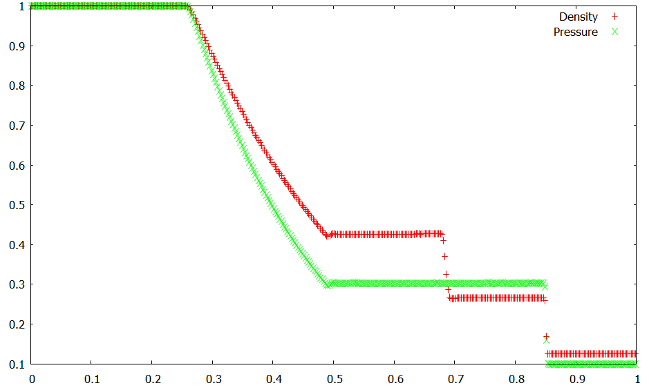
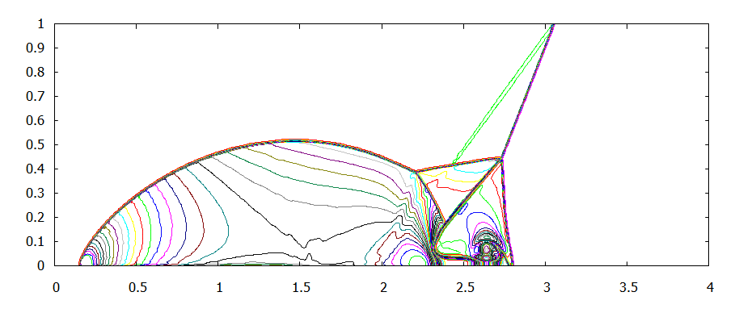
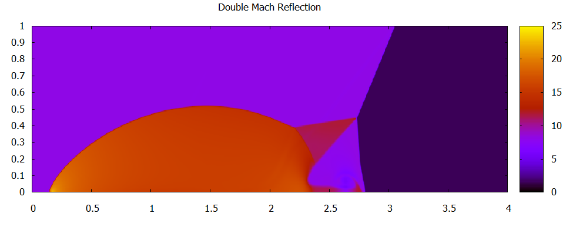
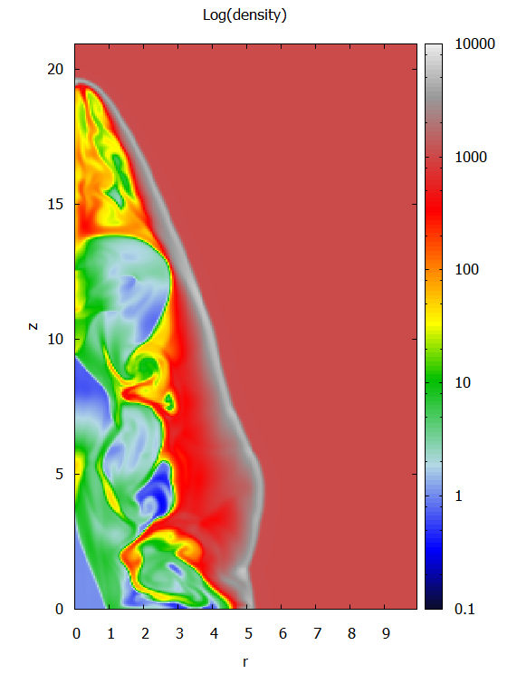
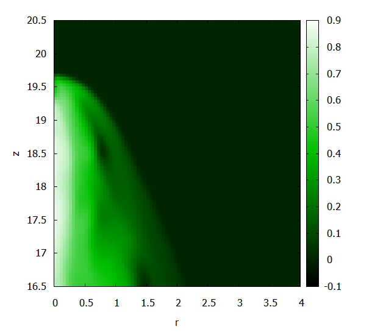
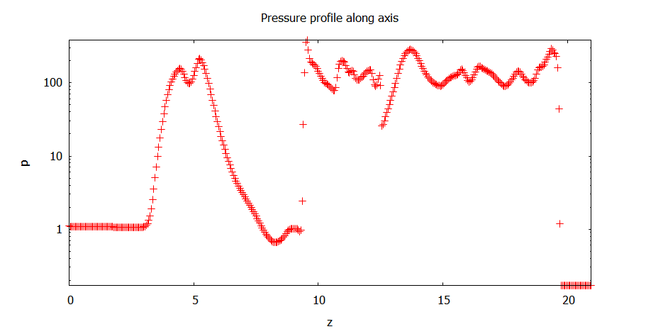

PLUTO data files written with the tabulated (*.tab) or binary data formats (*.dbl or *.flt) can be visualized with Gnuplot. At present, visualization capabilities apply to 1D or moderately-sized 2D datasets.
Tabulated (Ascii) data files have the advantage of incorporating grid information although they tend to rapidly increase in size for large numbers of grid points and cannot be used in parallel computations.
Binary data files do not embed grid information and extra information must be given at the command line. They are, however, a more efficient format for larger amount of data.
|
Ascii Data Files (.tab)
One-dimensional tabulated ascii data files can be plotted using the plot command.
|
If you enabled the .tab output format in pluto.ini, you can plot 1D data from, e.g., the first output file by typing
gnuplot> plot "data.0001.tab" u 1:3 title "Density"
gnuplot> replot "data.0001.tab" u 1:5 title "Pressure" # overplot
Here the first column corresponds to the x coordinate, the second column to the y coordinate and flow data values start from the third column. The name and order of the variables is the same given in tab.out log file (e.g. rho = 3, vx1 = 4, prs = 5). The figure below shows the density and pressure profiles for the Sod shock tube problem (conf. #03 in Test_Problems/HD/Sod) and it has been obtained with the previous commands.
|

Two-dimensional ascii datafiles can be visualized using the splot ommand. The next figure shows a simple contour drawing of density at the final time step of the Mach reflection test problem (remember to enable tab output in pluto.ini). Contour levels range from 0.1 to 20 and are spaced by 0.2. The following commands have been used:
|
gnuplot> set contour
gnuplot> set cntrparam level incremental 0.1,0.2,20
gnuplot> set view map
gnuplot> unset surface
gnuplot> unset key
gnuplot> splot "data.0001.tab" u 1:2:3 w lines
|

|
Here using 1:2:3 tells gnuplot to take columns 1, 2 for x and y and the third column as the data value to be contoured (density in this case).
Instead of contour levels, the pm3d style can be employed to draw colored map. In this case the same data set can be displayed using
|
gnuplot> reset
gnuplot> set pm3d map
gnuplot> set title "Double Mach Reflection"
gnuplot> splot "data.0001.tab" u 1:2:3
The result is shown in the figure below
|

|
Different colortables may be constructed by specifying the colors directly, e.g.
gnuplot> set palette defined (0 'black', 1 'blue', 2 'red')
gnuplot> replot
defines a colormap that linearly changes between black, blue and red (use show palette colornames to list the available colormap names). Have a look at http://gnuplot.sourceforge.net/demo/pm3dcolors.html.
|
Binary Data Files (.flt and .dbl)
Starting with Gnuplot 4.2, raw binary files are also supported. However, grid information is not automatically included and must be supplied separately.
2D multiple data files (multiple_files for .dbl or .flt outputs) can be plotted by specifying the array dimension and the data format to splot. This is done with the keyword array and format. As an example, in order to display the y-component of velocity from a 2D array with 200x200 points in double precision you can use
|
gnuplot> set pm3d map
gnuplot> splot "vx2.0010.dbl" binary array=200x200 format="%double"
|
where array=200x200 means that the underlying array structure has 200x200 points.
If data have been saved as single_file, you can select the variable to display by skipping the appropriate number of bytes through the skip=() function:
|
gnuplot> set pm3d map
gnuplot> nvar = 2 # 2 = y-velocity
gnuplot> splot "data.0010.dbl" bin array=200x200 format="%lf" skip=(200*200*8*nvar)
|
In this example, we skip by 200x200 (grid size) x 8 (bytes for double precision) x 2 (since vy is stored after density and x-velocity) bytes. The sequential order of variables can be deduced from the corresponding dbl.out file.
|
Including grid information using predefined scripts & macros
In the previous examples, the axis are scaled down to the number of points rather than to the actual coordinates since grid information is not included in PLUTO binary files but it is stored seprately (grid.out). For uniform grid spacing this problem can be fixed by taking advantage of the scripts provided with the PLUTO distribution under the Tools/Gnuplot directory. To this end, you need to define the GNUPLOT_LIB environment variable (in your shell) which will be appended to the loadpath of Gnuplot:
> export GNUPLOT_LIB=$PLUTO_DIR/Tools/Gnuplot # use setenv for tcsh users
Alternatively, you can also change the loadpath directly from Gnuplot:
gnuplot> set loadpath '<pluto_full_path>/Tools/Gnuplot'
You can then start a Gnuplot session as follows:
gnuplot> load "grid.gp" # read and store grid information
gnuplot> dsize=8; load "macros.gp" # set the display
gnuplot> load "pm3D_setting.gp" # set display canvas for pm3d plot style
The first line invokes the grid.gp script that reads grid.out and initializes variables such as grid spacing (dx, dy), domain range (xb,xe and yb,ye) and length (Lx=xe-xb, and Ly=ye-yb), number of points (nx,ny).
The second line sets the data size (dsize=8 or dsize=4 for double or single prcision) and then initializes some convenient macros (@BINARR, @XSLICE and @YSLICE) used to pass command line options embedding grid and data-format specifications to splot and plot.
The third script, pm3D_setting.gp, sets a default environment for viewing binary data files using the pm3d style of Gnuplot.
You may also call all of them at once using load "pluto.gp".
Using these macros makes it a lot easier to replace the previous 2D plots of the y-velocity with
gnuplot> splot "vx2.0010.dbl" @BINARR
or, in the case of a single data file, with
gnuplot> nvar = 2; splot "data.0010.dbl" @BINARR
Here nvar is used to select the variable to be plotted out of a single data set but must be 0 for multiple data files.
In the following we provide three visualization examples on the relativistic magnetized jet with toroidal magnetic field (conf # 01 in Test_Problems/RMHD/Toroidal_Jet/, 200x420 zones).
|
gnuplot> load "pluto.gp"
gnuplot> set term window 0
gnuplot> set term window size 600,860 # set window size
gnuplot> set log cb # set log scale
gnuplot> set title "Log(density)"
gnuplot> set xlabel "r"
gnuplot> set ylabel "z"
gnuplot> nvar=0; splot "data.0001.dbl" @BINARR
|

|
gnuplot> set palette defined (0 'black', 1 'web-green', 2 'white')
gnuplot> set term window 1 # set new window
gnuplot> set term window size 640,640 # set size
gnuplot> unset log cb
gnuplot> set bmargin at screen 0.15 # adjust bottom margin
gnuplot> set title " "
gnuplot> nvar=2; splot [0:4] [16.5:20.5] "data.0001.dbl" @BINARR
|

|
gnuplot>
gnuplot> splot "data.0001.dbl" @BINARR every 4:4
will downsample the data by a factor of 4
|
gnuplot> unset pm3d
gnuplot> set term window 2
gnuplot> set title "Pressure profile along axis"
gnuplot> set tmargin at screen 0.85
gnuplot> set xlabel "z"
gnuplot> set ylabel "p"
gnuplot> set log y
gnuplot> nvar = 7; icut=0; plot "data.0001.dbl" @YSLICE
|

|